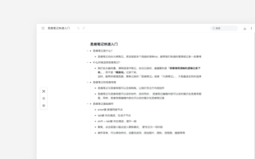
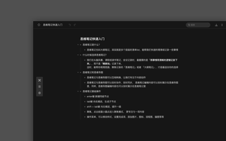

目录
快捷键说明
LaTeX常用方程式
历史记录
意见反馈
打印
OPML
文件
(*.opml
大纲文件
)
PNG
图片文件
（*.png）
JPG
文件
（*.jpg
默认白底
）
PDF
文件
（*.pdf）
POS
文件
（*.pos
可导入，包含图片和图形结构定义
）
Word
文件
(*.docx)
PPT
文件
(*.pptx)
Excel
文件
(*.csv)
XMind
文件
(*.xmind)
FreeMind
文件
(*.mm)
导出全部画布
（*.poso
可导入，包含图片和图形结构定义
）
查找
替换
查找
0
/
0
替换为
替换
全部替换
文件导出
OPML
文件
(*.opml
大纲文件
)
图片文件
（*.png）
JPG
文件
（*.jpg
默认白底
）
PDF
文件
（*.pdf）
POS
文件
（*.pos
可导入，包含图片和图形结构定义
）
Word
文件
(*.docx)
PPT
文件
(*.pptx)
Excel
文件
(*.csv)
XMind
文件
(*.xmind)
FreeMind
文件
(*.mm)
导出全部画布
（*.poso
可导入，包含图片和图形结构定义
）
展示模式
默认
默认
看板
完成
Ctrl+Enter
备注
Shift+Enter
图片
LaTeX方程式
流程图
思维导图
图标
删除
Ctrl+Shift+Space
模式
大纲
/dg
看板
/kb
基础
一级标题
/h1
二级标题
/h2
三级标题
/h3
完成
/wc
插入
备注
/bz
图片
/tp
图标
/tb
公式
/gs
流程图
/lct
思维导图
/swdt
代码块
/dmk
输入文字或“/”插入
输入关键词
优先级
进度
表情
箭头
旗帜
星星
时间
月份
星期
符号
（
其他
）
快捷键
通用
增加同级节点
Enter
向右缩进
Tab
向左缩进
Shift
+
Tab
多选
Ctrl
+
拖拽
快速删除节点
Ctrl
+
Shift
+
Backspace
删除选中节点
Delete
快速聚焦
Ctrl
+
,
/
.
格式和编辑
设置完成
Ctrl
+
Enter
添加备注
Shift
+
Enter
节点内文本换行
Alt
+
Enter
设为
1、2、3
级标题
Alt
+
1/2/3
设同级节点为标题
Alt
+
Shift
+
1/2/3
设为正文
Alt
+
4
设同级节点为正文
Alt
+
Shift
+
4
复制
Ctrl
+
C
剪切
Ctrl
+
X
粘贴
Ctrl
+
V
撤销
Ctrl
+
Z
恢复
Ctrl
+
Y
LaTeX方程式
Ctrl
+
E
导航和选择
展开
/
收起节点
Ctrl
+
/
向上移动光标
↑
向下移动光标
↓
向上多选节点
Shift
+
↑
向下多选节点
Shift
+
↓
向上移动节点
Ctrl
+
Shift
+
↑
向下移动节点
Ctrl
+
Shift
+
↓
LaTeX
常用方程式
更多方程式参见
帮助
:数学公式
历史记录
导入文件
（opml、pos
格式
）
另存为图片格式
（.png）
另存为opml格式（可用于导入）
系统色
无填充
最近使用
Hex
RGB
更多颜色
设置
主题模式

浅色模式
（
默认
）

深色模式
备注显示
显示第一行
完整显示
页面尺寸
固定宽度将使内容平铺到一张
A4
纸，设置自适应宽度后，文字宽度将适应页面宽度
固定宽度展示
自适应宽度
 更多颜色
更多颜色